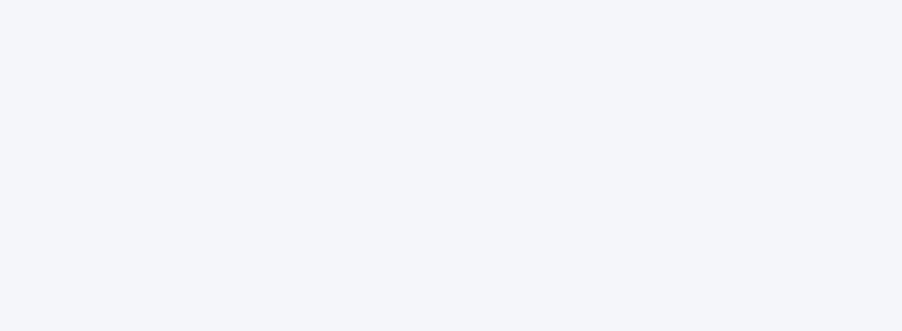
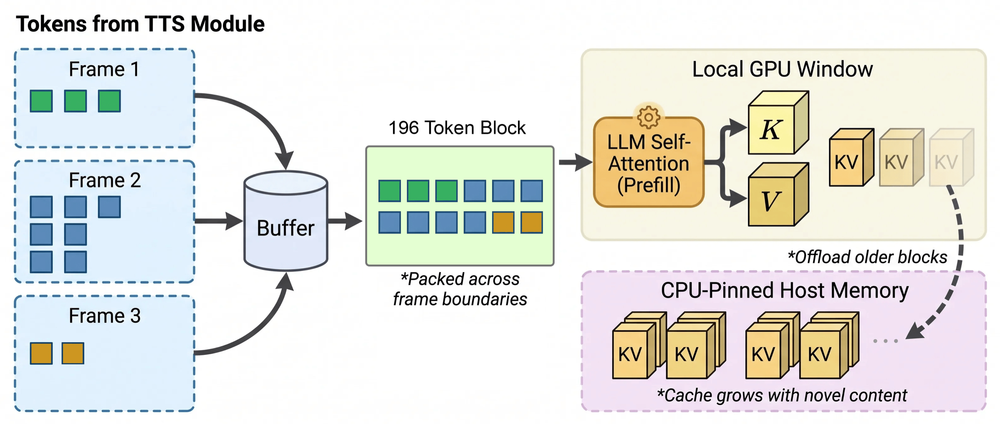

Under Review

Streaming video MLLMs typically allocate a fixed visual-token budget to every arriving frame, even when consecutive frames contain little new visual information. As a result, encoding cost and KV-cache growth scale with elapsed time rather than with new visual information. We propose StreamPrune, a training-free, query-free module that prunes visual tokens online before they enter the language-model cache. Its core mechanism, Temporal Token Similarity (TTS), compares each incoming token with the last token actually retained at the same spatial location. Because the reference is updated only when a token is kept, every discarded token remains within the threshold τ of the last retained reference, regardless of the length of the dropped-frame run. Content-Adaptive Caching (CAC) then packs retained tokens across frame boundaries, making LLM prefill and KV-cache growth proportional to the retained token count rather than the number of processed frames. Across six streaming video benchmarks, StreamPrune removes 92.6% of visual tokens while retaining 98.6% of the unpruned model’s average accuracy, increases encoding throughput by 6.2× and reduces KV-cache growth by 10.5×. At a moderate operating point, it removes 73.8% of tokens with no change in average accuracy. These results demonstrate that streaming visual compute and memory can be allocated in proportion to measured visual change rather than uniformly across frames. Code will be released publicly after the review process.

We show that token pruning is achievable in video streams without substantial accuracy loss: applied to our base model, StreamPrune improves streaming throughput by 6.18× while reducing tokens by 92.6 ± 1.8%. These gains do not come from exploiting benchmark shortcuts. Many video benchmarks are answerable from commonsense or textual cues alone, and on such a benchmark pruning would cost nothing regardless of which tokens were removed. We therefore evaluate on benchmarks that require visual grounding. Accuracy does not drop substantially: video streams can be pruned by over 90% of their visual tokens (92.6% at threshold 0.70) at a cost of only 0.8 points in average accuracy.
| Model – 1 FPS | Avg Acc ↑ | TR% ↑ | Thr ↑ | KV (GB/h) ↓ |
|---|---|---|---|---|
| ReKV-7B | 56.1 | 0.0% | 11 | 37.7 |
| + StreamPrune @ 0.25 | 56.2 (+0.1) | 41.4% | 19 | 22.7 |
| + StreamPrune @ 0.50 | 56.1 (+0.0) | 73.8% | 37 | 10.6 |
| + StreamPrune @ 0.60 | 55.7 (−0.4) | 85.2% | 53 | 6.3 |
| + StreamPrune @ 0.70 | 55.3 (−0.8) | 92.6% | 68 | 3.6 |
| + StreamPrune @ 0.80 | 53.9 (−2.2) | 96.4% | 77 | 2.2 |
| + StreamPrune @ 0.90 | 52.0 (−4.1) | 98.1% | 81 | 1.6 |
| Backbone | Acc | Thr | TR% |
|---|---|---|---|
| ReKV-7B | 69.1 | 11 | 0% |
| + StreamPrune @ 0.50 | 70.8 | 37 | 73.8% |
| + StreamPrune @ 0.70 | 68.0 | 68 | 92.6% |
| LongVA-7B | 62.5 | 18 | 0% |
| + StreamPrune @ 0.50 | 61.3 | 42 | 71.1% |
| + StreamPrune @ 0.70 | 61.0 | 69 | 84.3% |
| Flash-VStream-7B | 48.8 | 15 | 0% |
| + StreamPrune @ 0.50 | 47.1 | 34 | 73.3% |
| + StreamPrune @ 0.70 | 41.2 | 59 | 85.1% |
TR% = token reduction rate, Thr = encoding throughput, KV = KV-cache growth per hour of video. The shaded row is our default setting (threshold 0.70).